Restaurace Na Městečku: nový web
Web, na kterém lidé z Lysic a okolí rychle najdou dnešní menu, a který vedoucím zájezdů a snoubencům „prodá“ sál. Menu přitom obsluha doplní sama během pár minut, klidně z telefonu. Na stránce je rozbor současného webu, návrh designu pro mobil i počítač, administrace menu, technické řešení a náklady.
Proklikejte si nový web
Návrh je funkční ukázka. Dá se proklikat na počítači i v telefonu a v administraci si můžete menu sami upravit a podívat se, jak se ukáže na webu.
Co jsme našli na současném webu
- Na telefonu se název rozdělí na „RESTA / URACE / NA / MĚSTE / ČKU“ a řádky menu se ořezávají.
- Jídelní lístek je 5 malých náhledů naskenovaných stran. Na mobilu se nedají přečíst a Google je nevidí.
- Denní menu je obyčejný text na úvodu bez cen a alergenů, zobrazuje se jen jeden den.
- Pro zájezdy a oslavy je jen jeden odstavec. Chybí fotky sálu s popisem, kapacita, ukázka menu i formulář poptávky.
- Dvě telefonní čísla pro různé účely jsou schovaná v textu a nedají se na mobilu rovnou vytočit.
- Web běží na starém webovém editoru Yola (šablona z doby Internet Exploreru, jQuery 1.11 z roku 2014).
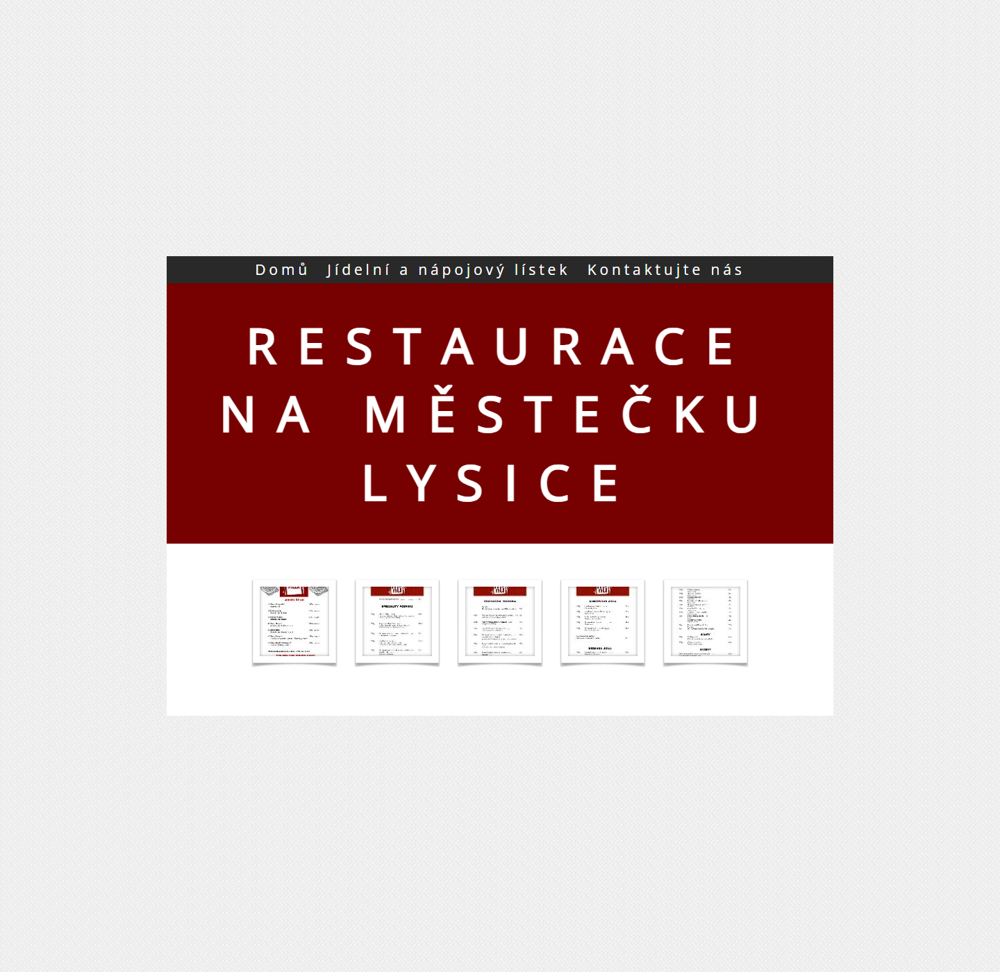
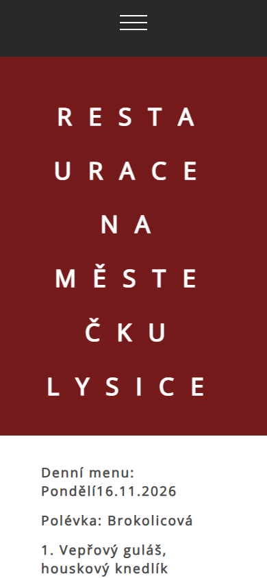
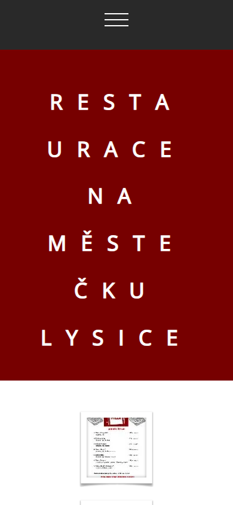
Dva typy návštěvníků, dvě hlavní cesty
„Co je dneska k obědu?“
Místní, řemeslníci, lidé z kanceláří. Chtějí za pět vteřin vidět dnešní menu a zavolat si o jídlo s sebou.
- Dnešní menu na žluté tabuli hned na první obrazovce telefonu, po 14:00 a o víkendu automaticky menu na další den.
- Cena a alergeny u každého jídla, štítek „bez masa“.
- Tlačítko „Objednat jídlo“ (516 472 188) stále dole na displeji.
- „Teď vaříme obědy, menu do 14:00“ podle aktuálního času.
„Kam se zájezdem na oběd?“
Vedoucí zájezdů, cestovní kanceláře, snoubenci, firmy. Prostor si chtějí prohlédnout a rychle se domluvit.
- Samostatná stránka Zájezdy a oslavy s fotkami sálu, svateb a rautů.
- Argumenty: zámek 300 m, zastávka 30 m a parkoviště hned u restaurace (mapa), hodnocení 4,1 ★ na Googlu a 4,3 ★ na Mapy.cz, menu předem.
- Ukázky skupinových menu a postup ve 4 krocích.
- Formulář poptávky (datum, počet osob, čas příjezdu) a přímé číslo 775 206 577.
Nejdřív telefon
Web vypadá jako vývěska hospody na náměstí. Dnešní menu je na žluté tabuli v barvě fasády, nápisy mají vínovou barvu malovaného nápisu a písmo připomíná malovaný štít. Žádné vymyšlené logo, žádné šablonové ozdoby. Všechny fotky jsou ze současného webu restaurace.
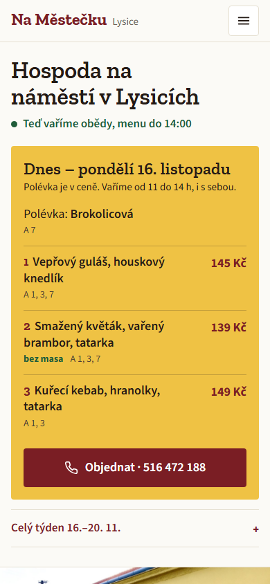
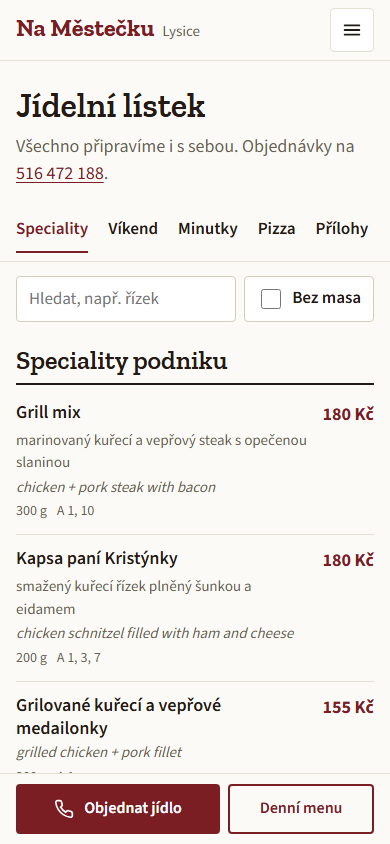
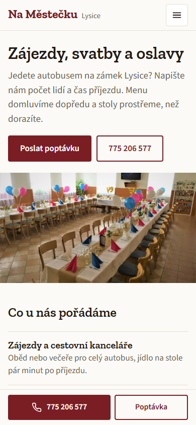
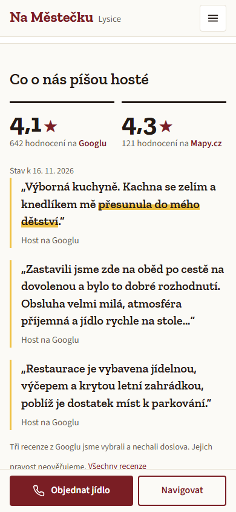
A na počítači
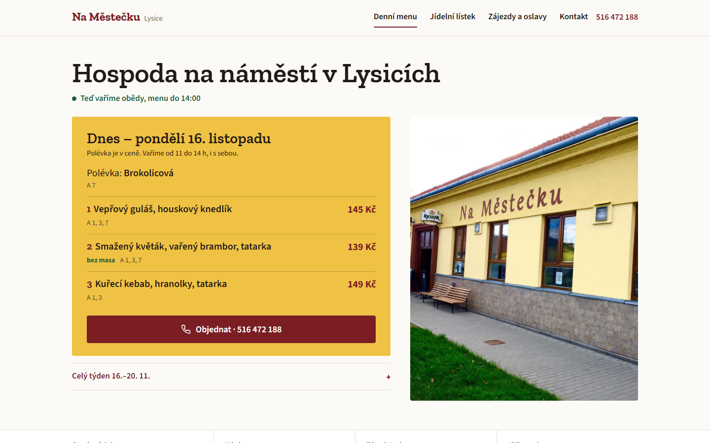
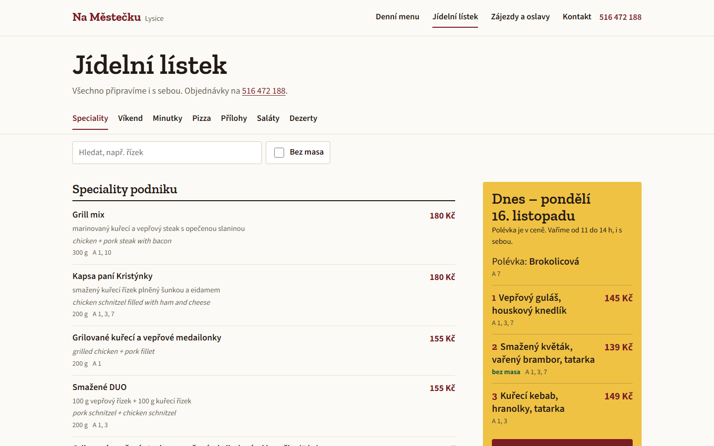
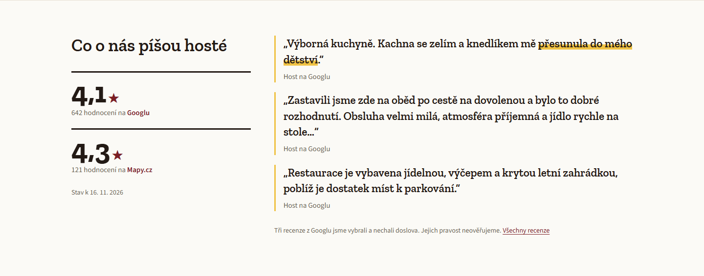
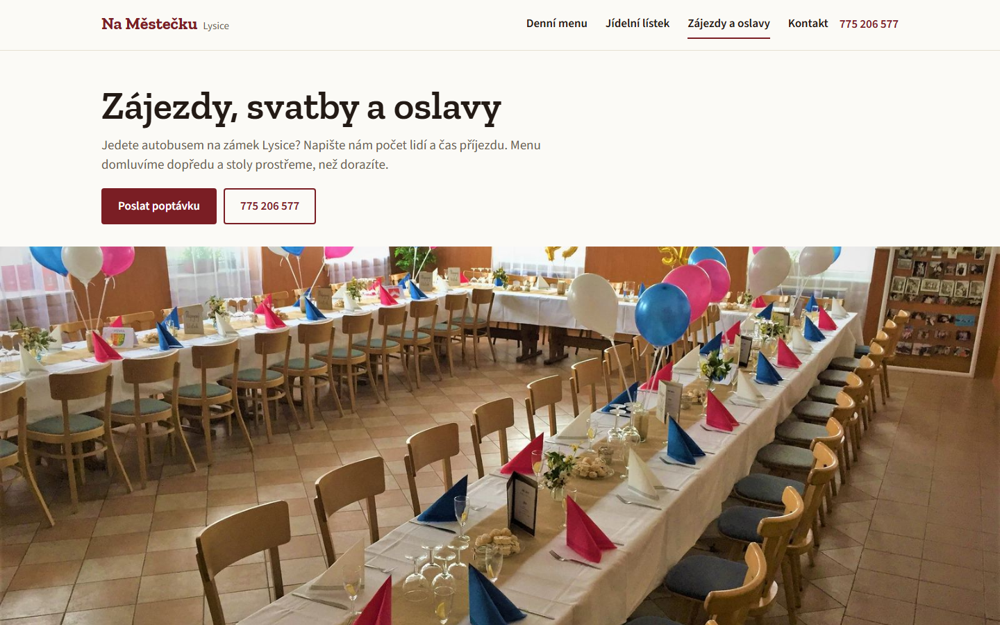
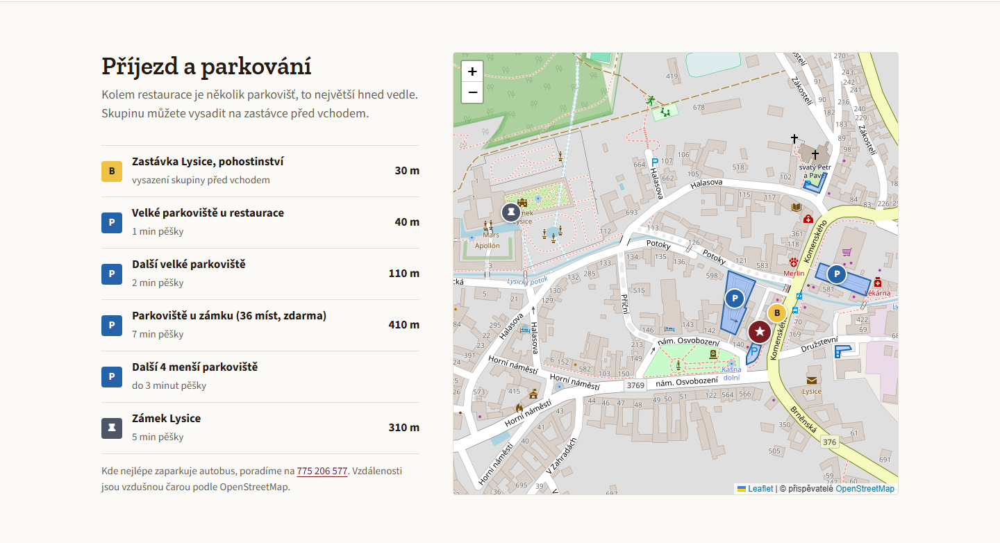
Jak vzniklo nové řešení
Restaurace dostala i jiný návrh webu. Oba návrhy jsme dali posoudit dvěma nezávislým kritikům. Každý pracoval s jiným nástrojem pro hodnocení designu (Impeccable a Taste-skill). Pak oponovali jeden druhému a shodli se na společném směru: web jako vývěska hospody na náměstí. K tomu jsme prošli moderní weby hospod a bister (Lokál, obed.ambi.cz, Padella a oceněné weby na Awwwards).
Co měl druhý návrh dobře
- Hodnocení hostů hned nahoře.
- Skutečná věta hosta jako hlavní myšlenka („kachna jako z dětství“).
- Fasáda jako poznávací znak.
Co jsme nepřevzali
- Fotky hostů z Google Map bez svolení autorů.
- Jídla bez cen („dle nabídky“) a žádné denní menu.
- Oříznutý nadpis na mobilu, prázdné plochy po animacích.
- Na oslavy odkazuje na číslo pro objednávky jídla.
Na čem se kritici shodli
- Dnešní menu i telefon na první obrazovce mobilu.
- Žlutá jen na tabuli s menu, jinak papír, inkoust a vínová.
- Žádné nadpisky nad nadpisy, pilulky, stíny ani text přes fotky.
- Recenze se zdrojem, počtem a datem, nic vymyšleného.
Fotky a recenze: v čem je rozdíl
Fotky
Druhý návrh má asi polovinu fotek ze současného webu restaurace. Druhá polovina (kachna, řízek, pizza, steak, výčep s pivem, večerní fasáda) jsou podle všeho fotky hostů z Google Map. Ty patří jejich autorům a Google je mimo své služby převzít nedovoluje. Náš návrh používá jen fotky restaurace. Nejlepší řešení je jedno dopoledne focení telefonem: fasáda, výčep, šest jídel z menu, sál a zahrádka.
Recenze
Ukazujeme obě hodnocení s počtem a zdrojem: 4,1 ★ z 642 na Googlu a 4,3 ★ ze 121 na Mapy.cz. K tomu tři doslovné úryvky. V ostrém webu se recenze načtou přes oficiální napojení na Google, i se jménem a datem. Obsluha v administraci vybere, které ukázat. Zákon o ochraně spotřebitele vyžaduje uvést, zda a jak se pravost recenzí ověřuje, a na webu to je.
Menu na celý týden za pár minut
Kdo dnes menu ručně přepisuje do webu, dostane jednoduchou obrazovku jen pro denní menu. Funguje na počítači i na telefonu a vpravo hned ukazuje, jak to uvidí hosté. Po kliknutí na „Uložit a zveřejnit“ je menu na webu.
Stačí začít psát
Po napsání „guláš“ web nabídne jídla, která se už vařila, i s alergeny a poslední cenou. Jedním klepnutím je vše vyplněné.
Celý týden najednou
Menu napsané ve Wordu, e-mailu nebo zprávě stačí zkopírovat a vložit. Dny, polévky, jídla, ceny i alergeny v závorce se rozpoznají samy a před uložením je vše vidět.
Minulý týden a A4
„Kopie minulého týdne“ připraví týden k úpravě. „Vytisknout A4“ udělá papírové menu na dveře a tabuli ze stejných dat.
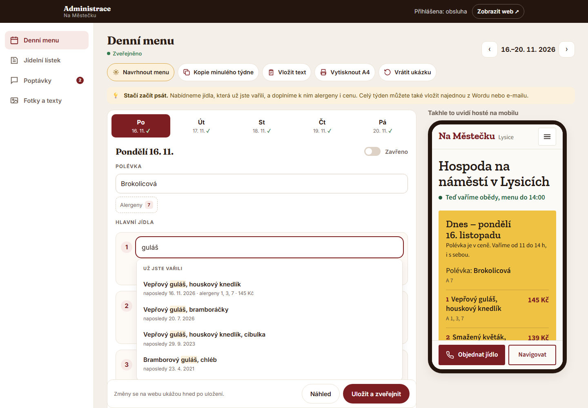
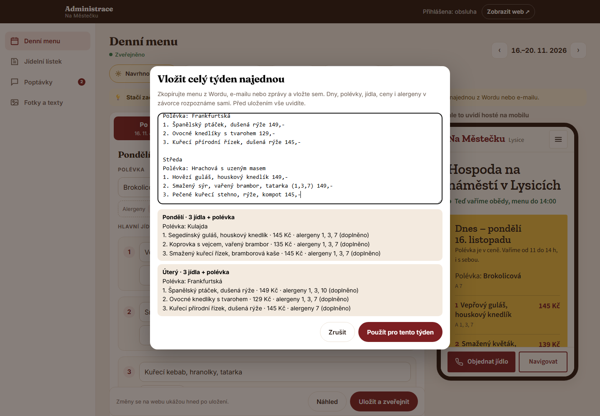
V mockupu se dá administrace opravdu vyzkoušet: změna uložená v admin.html se objeví na úvodní stránce (v tom samém prohlížeči). Tlačítko „Vrátit ukázku“ vrátí původní data. Dál administrace obsahuje jídelní lístek (cena přímo v řádku, skrytí jídla), poptávky ze zájezdového formuláře, fotky a oznámení typu „24. 12. zavřeno“.
Web sám navrhne menu na příští týden
Menu se v čase opakuje, a to se dá využít. Z webového archivu (web.archive.org) jsme ze současného webu vytáhli 52 skutečných denních menu od září 2019 do listopadu 2026. Tlačítko „Navrhnout menu“ z nich sestaví celý týden: polévku a tři jídla na každý den. U každého jídla je napsané, proč ho vybralo. Co se líbí, se zamkne, a zbytek se nechá navrhnout znovu.
- Oblíbenost: jak často se jídlo vařilo.
- Místo v menu: jídlo č. 2 je u vás skoro vždy smažené bez masa (sýr, hermelín, žampiony, květák).
- Roční období: co se vařilo v podobnou dobu, „letní“ saláty jen v létě.
- Odstup: co bylo minulý týden, odsune. Co dlouho nebylo, posune dopředu.
- Pestrost: v týdnu se nic neopakuje a v jednom dni nejsou dva knedlíky ani dvě rýže.
Nejde o umělou inteligenci ani placenou službu. Je to pár desítek řádků výpočtu nad vlastními daty restaurace. Ověřeno na 3 000 vygenerovaných dnech: každý den má polévku, tři jídla a jedno bez masa.
| Vepřový guláš, houskový knedlík | 14× |
| Smažené žampiony, vařený brambor | 12× |
| Smažený sýr (i NIVA) | 10× |
| Smažený vepřový řízek | 9× |
| Vepřové výpečky, zelí, knedlík | 8× |
| Smažený hermelín | 7× |
| Polévky: hovězí vývar s nudlemi 12×, frankfurtská 8×, čočková 5× |
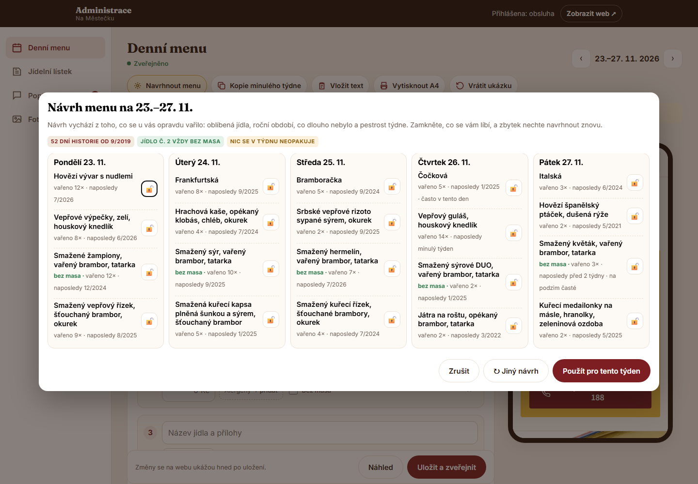
1. Z archivu
Jednorázově staženo: 52 dní menu z let 2019–2026. Archiv ale ukládal web jen občas (zhruba jednou za 1–2 měsíce), proto je to jen vzorek.
2. Od teď každý den
V soukromém repozitáři běží automat (GitHub Actions), který každý den kromě neděle uloží menu ze současného webu. Do spuštění nového webu se tak nasbírá souvislá historie.
3. V novém webu
Každé uložení menu v administraci se zapíše do historie i s alergeny a cenou. Návrhy i našeptávač se tak s každým týdnem zpřesňují. Pokud má restaurace staré menu ve Wordu nebo v e-mailech, dají se nahrát přes „Vložit text“.
Technické řešení
Web
Next.js. Stránky se předgenerují a po uložení menu se obnoví, takže se načítají okamžitě i na slabém signálu. Fotky se samy zmenší pro mobil.
Administrace
Payload CMS na adrese /admin, s vlastní obrazovkou pro denní menu (našeptávač, vložení textu, tisk). Spravuje se v ní:
- denní menu po týdnech
- jídelní lístek a nápoje
- poptávky, fotky a oznámení
Vyhledávače
Lístek bude text místo obrázků, takže ho Google najde (např. „oběd Lysice“). Přidáme profil restaurace pro Google a Mapy.cz s otevírací dobou a odkazem na menu. Staré adresy (contact-us.php, jídelní lístek) se přesměrují.
Co dalšího by se hodilo
Prošli jsme weby restaurací a portálů s denním menu. Tohle jsou nápady, které v návrhu zatím nejsou, seřazené podle užitku pro restauraci tohoto typu. Náročnost: M malá, S střední.
| Nápad | Proč se hodí | Náročnost |
|---|---|---|
| Denní menu i na Meníčka.cz doporučuji | Meníčka.cz umí každé ráno (v 6:00, s opakováním do 13:00) stáhnout menu z webu restaurace přes XML feed. Podle jejich stránek pak menu jde i na Mapy.cz/Firmy.cz, Facebook a e-mailem odběratelům. Obsluha menu zadá jednou a objeví se všude. Podmínky a cenu je potřeba ověřit, zápis restaurace na meníčkách jsme nenašli. | M |
| Kalendář akcí a sezónních nabídek doporučuji | Svatomartinská husa, zabijačka, zvěřinové hody nebo hody. Na takové akce se rezervuje dopředu. Stačí seznam s datem a tlačítkem „Rezervovat“. Kalendář akcí má např. Zámek Liblice. | M |
| QR kód na tištěném menu a na stolech doporučuji | Tisk A4 z administrace dostane QR kód na aktuální menu a lístek. Odkaz se nemění, stačí jednou vytisknout. | M |
| Praktické informace pro skupiny doporučuji | Parkování a zastávka jsou už na mapě v návrhu. Doplnit: bezbariérový vstup, platba kartou a stravenkami, dětská židlička, psi, Wi-Fi. Údaje musí dodat restaurace. | M |
| Nabídka pro cestovní kanceláře v PDF | Jedna strana s fotkami, kapacitou, ukázkovými menu a kontaktem, kterou si CK přepošle. Vygeneruje se z webu, takže je vždy aktuální. | M |
| Pruh s oznámením | „24. 12. zavřeno“, „Tento týden dovolená“, „V sobotu uzavřená společnost“. Místní nejčastěji řeší, jestli je otevřeno. Napojí se na „Teď otevřeno“. | M |
| Strukturovaná data pro Google | Otevírací doba, adresa, menu a telefon ve formátu, kterému rozumí Google a mapy. Nic to nestojí. | M |
| Předobjednávka jídla s časem vyzvednutí později | Formulář „jídlo + čas vyzvednutí“ bez placení, potvrzení e-mailem nebo SMS. Uleví telefonu v poledne. | S |
| Dárkové poukazy později | Poukaz na oběd nebo večeři, objednávka e-mailem a vystavení ručně, bez platební brány. Prodává je např. Zámek Liblice. | M–S |
| Německý a anglický lístek později | Lístek už má anglické názvy. Pro turisty na zámku stačí přepínač jazyka u lístku a u stránky pro skupiny. Překlad zkontroluje člověk. | S |
Spíš ne: vlastní platby a rozvoz (provoz je nezvládne a telefon stačí), widget s Google recenzemi (zpomalí web, stačí odkaz), vlastní aplikace nebo věrnostní program. Rezervační systém Restu.cz podle zpráv z roku 2020 skončil, na běžné stoly stačí tlačítko „Zavolat“.
Dvě varianty provozu
Web nepotřebuje platební bránu ani e-shop, takže provoz je levný. Varianta A je zdarma s limity bezplatných tarifů, které takovému webu stačí. Varianta B je vlastní malý server s jednoduchými zálohami.
| Položka | A: zdarma | B: vlastní server |
|---|---|---|
| Hosting webu | Cloudflare Workers Free | Hetzner VPS ~5 €/měs. |
| Databáze (menu, lístek, poptávky) | Cloudflare D1 Free | PostgreSQL na stejném serveru |
| Fotky | Cloudflare R2 (10 GB zdarma) | Disk serveru |
| E-maily s poptávkami | Resend Free (3 000/měs.) | Resend Free |
| Doména restauracenamestecku.cz | Stávající, ~250 Kč/rok | Stávající, ~250 Kč/rok |
| Celkem měsíčně | 0 Kč | ~125 Kč |
Ověřit: kolik se dnes platí za Yolu. Po přechodu se tento poplatek ušetří. Doménu je potřeba mít pod kontrolou (kdo ji platí a u koho je registrovaná).
Co potřebujeme od restaurace
Údaje označené v mockupu žlutě (doplnit, ověřit) jsou zatím odhad nebo ukázka:
- Kapacita sálu a zahrádky (počet míst). Kde přesně může stát autobus: parkoviště a zastávka „Lysice, pohostinství“ jsou podle OpenStreetMap hned u restaurace, ale jestli se tam vejde autobus, ví jen restaurace.
- Ceny skupinových menu, případně zda mají řidič a průvodce oběd zdarma.
- Ceny denního menu a čas výdeje (v návrhu ukázkově 129–159 Kč, 11:00–14:00). Úterý až pátek jsou v návrhu ukázková jídla, pondělí je opsané z webu.
- Do kdy vaří kuchyně a jestli se menu podává i v sobotu.
- Nápojový lístek (na webu chybí úplně) a aktuálnost cen v jídelním lístku.
- Logo, pokud existuje, a nové fotky jídel. Stačí z telefonu, web je sám upraví.
- Kdo bude menu zadávat a jestli raději z telefonu, nebo z počítače.
Další kroky
- Rozbor a návrh designu
Mockupy úvodu, jídelního lístku, stránky pro zájezdy a administrace denního menu na této stránce.
- Připomínky a doplnění údajů
Zpětná vazba od restaurace, vyplnění otázek výše a výběr varianty provozu A nebo B.
- Kostra webu a administrace
Next.js a Payload, datový model (týdenní menu, jídelní lístek, poptávky, fotky, oznámení), převod lístku a fotek.
- Zaškolení obsluhy
Krátká ukázka zadávání menu (cca 15 minut), týden souběžného provozu se starým webem.
- Spuštění
Test na zkušební adrese, přesměrování starých stránek, přepnutí domény a zápis do Google a Mapy.cz.